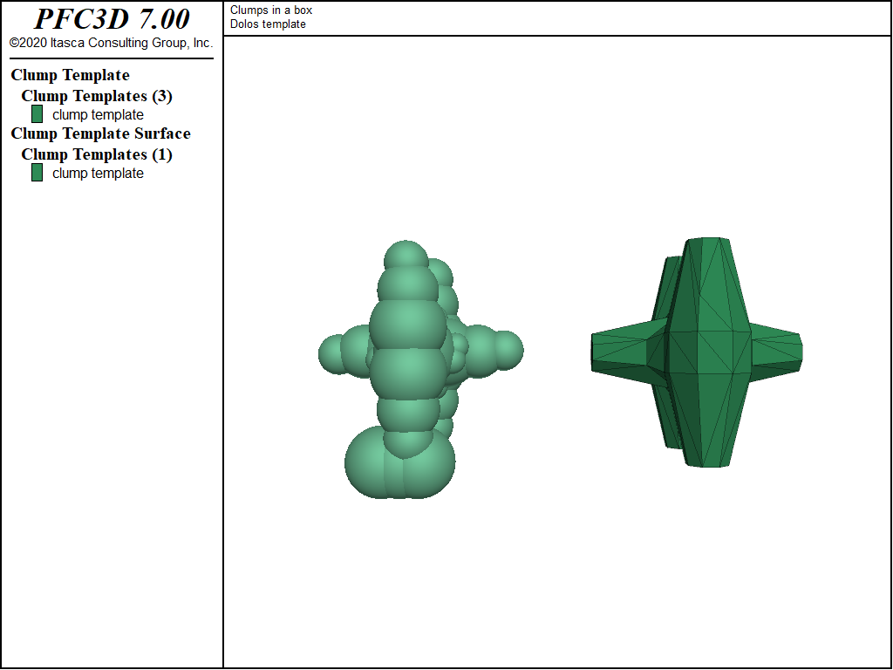
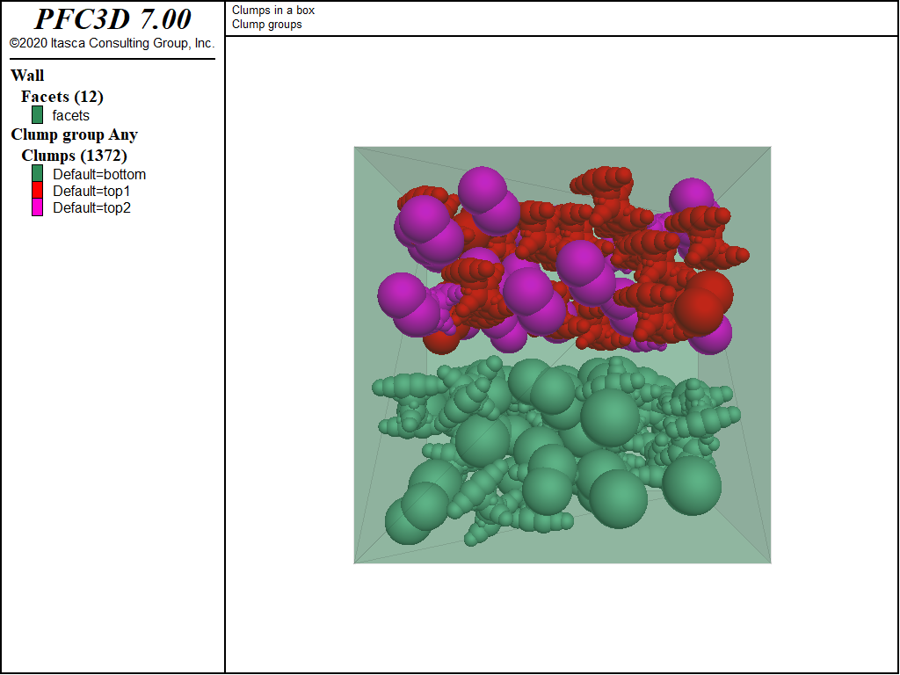
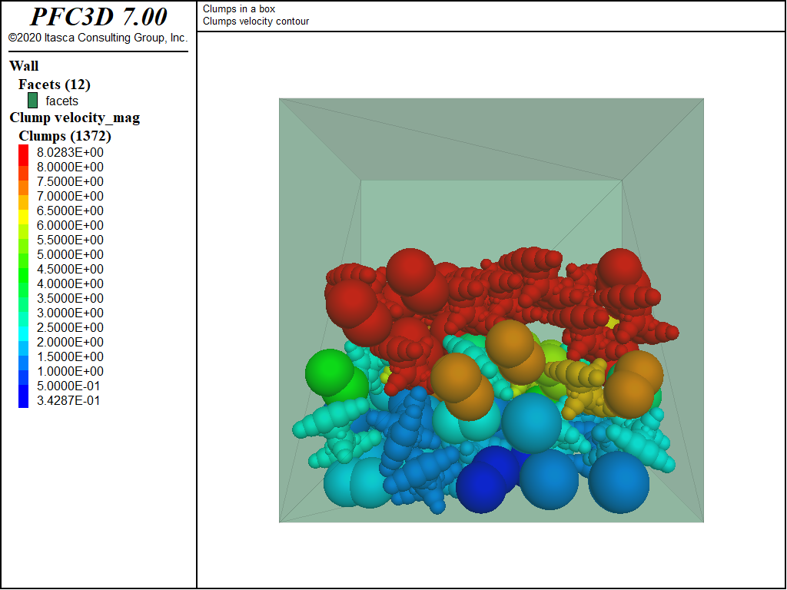
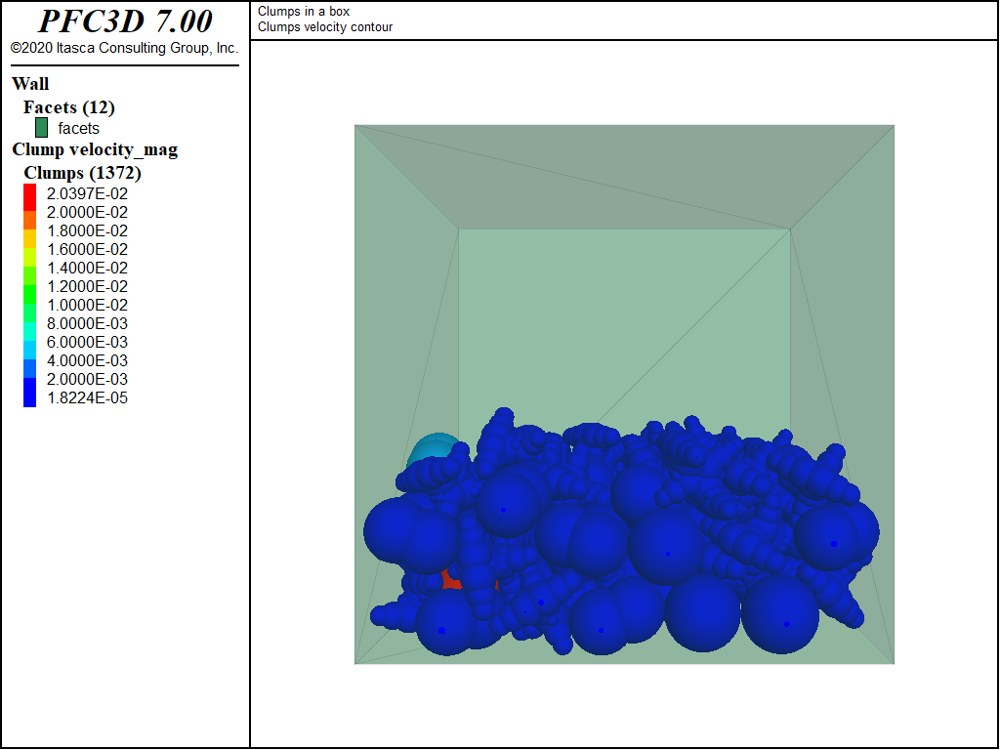

盒中的刚性簇
引言
注意
本算例的项目文件可在 PFC 中查看或运行。[1]所用的数据文件（data files）列于本算例末尾。
这个简单的示例与 盒中的球颗粒（balls in a box） 教程类似，都是将物体放入盒中并让其沉降稳定。不过在本例中，创建了三个刚性簇模板以演示刚性簇模板逻辑（参见 clump template 命令）。此示例还演示了 clump generate、clump attribute 和 contact cmat default 命令的用法，并使用了 线性接触模型（linear contact model）。
数值模型
本示例的完整数据文件（3D）为“clumps_in_a_box.dat（三维）（clumps_in_a_box.dat (3D)）”。下文讨论该文件中与“盒中的球颗粒（Balls in a Box）”教程存在实质性差异的选定代码行。有关 域（domain） 和 接触模型分配表（CMAT）（Contact Model Assignment Table (CMAT)） 的更详尽说明，请参阅该教程。
与球颗粒教程中一样，使用 contact cmat default 命令选择默认的力学接触模型。同时也选择了 线性接触模型（linear contact model），但与上一教程不同的是，此处还指定了附加的接触模型属性。在本例中，指定了剪切刚度、法向黏性阻尼比和摩擦系数。这些附加的接触模型属性可以在不使用局部阻尼的情况下耗散能量。
contact cmat default model linear property kn 1.0e6 ...
ks 5.0e5 dp_nratio 0.5 fric 0.3
刚性簇模板逻辑用于创建刚性簇对象，这些对象可以输出为文件以供后续使用（参见 刚性簇模板导出（clump template export） 和 刚性簇模板导入（clump template import） 命令）。刚性簇模板本身并不是模型对象；它充当在模型中创建与刚性簇模板形状相同的刚性簇的基础。由刚性簇模板创建刚性簇的各项功能包括：相对于其模板对刚性簇进行旋转、平移和缩放。用户既可以简单地由模板复制一个刚性簇（参见 clump replicate 命令），也可以生成刚性簇的分布（通过 clump generate 和 clump distribute 命令，如下文所述）。
本教程中创建的第一个刚性簇模板（参见 刚性簇模板创建（clump template create） 命令）由单个子颗粒组成。此处显式指定了刚性簇模板的完整惯性张量和体积。同时还指定了子颗粒的数量、半径和位置。请注意，惯性属性可以任意设定。
[rad = 0.5]
[vc = (4.0/3.0)*math.pi*(rad)^3]
[moic = (2.0/5.0) * vc * rad^2]
clump template create name 'single' ...
pebbles 1 ...
[rad] 0 0 0 ...
volume [vc] ...
inertia [moic] [moic] [moic] 0 0 0
第二个刚性簇模板采用另一种方法计算惯性属性。在本例中，刚性簇由两个半径相同的重叠子颗粒组成。既可以解析地计算这种构型的体积和惯性张量，也可以使用 pebcalculate 关键字由子颗粒构型计算这些参数。此处采用了体素化方法：它递归地将子颗粒所占据的体积细分为{在 2D 中为正方形；在 3D 中为立方体}，从而在指定容差内估算惯性属性。
clump template create name 'dyad' ...
pebbles 2 ...
[rad] [-rad*0.5] 0 0 ...
[rad] [rad*0.5] 0 0 ...
calculate-pebbles 0.005
第三个刚性簇模板又采用另一种方法来同时指定子颗粒和惯性属性。此刚性簇模板基于下文所示的扭工字块（dolos）的 .stl 表面描述。扭工字块用于保护海岸地区免受波浪作用造成的侵蚀。


图 1：扭工字块（dolos）的表面描述（右）以及 由 BubblePack 算法得到的子颗粒分布（左）。
要手动指定代表该几何形状的刚性簇模板的惯性属性与子颗粒位置可能相当困难。为此，将多洛斯刚性簇（dolos）的三角化、封闭且流形的表面描述作为几何集合导入（参见 导入几何对象（geometry import） 命令），并利用 surfcalculate 关键字由该几何集合计算此形状的惯性性质。子颗粒则通过使用 气泡堆积（bubblepack） 算法对多洛斯刚性簇中面进行近似而自动计算得到。该算法在二维和三维条件下均可自动填充凸的和凹的几何形状。ratio 关键字指定刚性簇模板中最小子颗粒与最大子颗粒的比值，distance 关键字则指定子颗粒分布平滑程度的一种角度度量。通过这种方式，可以控制子颗粒分布与表面表示相吻合的保真度。表面并不用于求解接触；只有子颗粒用于这一目的。表面描述是一种可用于定义子颗粒半径/位置和惯性属性的工具。提供表面描述的另一个好处是，刚性簇可通过该表面描述进行可视化，如下所示。
geometry import 'dolos.stl'
clump template create name 'dolos' ...
geometry 'dolos' ...
bubblepack ratio 0.3 distance 120 ...
calculate-surface
在生成刚性簇将在其中沉降的材料容器之后，使用 clump generate 命令生成刚性簇。该命令将刚性簇放置于箱体中且互不重叠。生成的第一批刚性簇具有随机方位，其体积等效于直径为 1.5 的球体。体积和惯性张量会自动缩放。在本例中，对所有刚性簇模板等量抽样以生成 50 个刚性簇。为这 50 个刚性簇设置了分组标识符 bottom。
clump generate diameter size 1.5 number 50 ...
box -5.0 5.0 -5.0 5.0 -5.0 0.0 ...
group 'bottom'
用户可能希望既控制基于各指定模板的刚性簇比例，又控制刚性簇相对于模板方位的朝向。以下代码通过 templates、azimuth、elevation 和 tilt 关键字同时实现这两个目标。请注意，可以对同一空间箱体给出多条 clump generate 命令，且由这些独立操作生成的刚性簇不会重叠。
与球颗粒类似，还存在另一条命令（clump distribute），用于生成一组满足目标孔隙率且允许重叠的刚性簇。该逻辑对球颗粒和刚性簇的工作方式类似。简单示例请参阅“复现颗粒尺寸分布（Replicating a Particle Size Distribution）”教程。
clump generate diameter size 1.5 number 25 ...
box -5.0 5.0 -5.0 5.0 0.0 5.0 ...
templates 2 ...
'dyad' 0.3 'dolos' 0.7 ...
azimuth 45.0 45.0 ...
tilt 90.0 90.0 ...
elevation 45.0 45.0 ...
group 'top1'
clump generate diameter size 1.5 number 25 ...
box -5.0 5.0 -5.0 5.0 0.0 5.0 ...
templates 2 ...
'dyad' 0.7 'dolos' 0.3 ...
azimuth -45.0 -45.0 ...
tilt 90.0 90.0 ...
elevation 45.0 45.0 ...
group 'top2'


图 2：按分组标识符着色的刚性簇。各分组对应于
clump generate 命令的不同实例，且互不重叠。
随后让刚性簇在重力作用下于箱体中沉降。在沉降的中间阶段可以看出，模型顶部附近的许多刚性簇正在重力作用下作匀速运动。这些刚性簇在生成时并未重叠，会以相同的速度彼此相邻地继续下落。刚性簇很快在箱体中达到平衡。


图 3：经过 0.8 个时间单位后按速度着色的刚性簇。


图 4：求解至平衡后按速度着色的刚性簇。
讨论
本例介绍了刚性簇模板逻辑，以及由刚性簇构建简单 PFC 模型的主要步骤。这种能力也带来了哲学层面的问题：刚性簇代表什么？刚性簇是否应具有定义其几何形状的表面的惯性属性？刚性簇的惯性属性是否应与用于求解接触的实际子颗粒属性一致？该逻辑允许采用上述两种做法。
数据文件
clumps_in_a_box.dat（三维）
; 文件名：clumps_in_a_box.dat
;
; 演练刚性簇模板的创建与生成
;=========================================================================
model new
model large-strain on
model title 'Clumps in a box'
; 设置计算域范围与随机种子
model domain extent -10.0 10.0
model random 12001
; 修改接触模型分配表的默认槽位
; 此处为所有接触类型选择线性接触模型
; excerpt-ixsz-start
contact cmat default model linear property kn 1.0e6 ...
ks 5.0e5 dp_nratio 0.5 fric 0.3
; excerpt-ixsz-end
; 创建刚性簇模板，指定惯性张量与体积
; excerpt-myzu-start
[rad = 0.5]
[vc = (4.0/3.0)*math.pi*(rad)^3]
[moic = (2.0/5.0) * vc * rad^2]
clump template create name 'single' ...
pebbles 1 ...
[rad] 0 0 0 ...
volume [vc] ...
inertia [moic] [moic] [moic] 0 0 0
; excerpt-myzu-end
; 创建刚性簇模板，并指定由卵石通过体素化计算
; 惯性参数
; excerpt-jnxu-start
clump template create name 'dyad' ...
pebbles 2 ...
[rad] [-rad*0.5] 0 0 ...
[rad] [rad*0.5] 0 0 ...
calculate-pebbles 0.005
; excerpt-jnxu-end
; 由 stl 文件创建刚性簇模板，并用
; bubblepack 算法填充
; excerpt-ltms-start
geometry import 'dolos.stl'
clump template create name 'dolos' ...
geometry 'dolos' ...
bubblepack ratio 0.3 distance 120 ...
calculate-surface
; excerpt-ltms-end
; 生成容器箱体
wall generate box -5.0 5.0 one-wall
; 在一个箱体中生成刚性簇且不控制取向，从所有
; 刚性簇模板中均匀抽取
; excerpt-pnqn-start
clump generate diameter size 1.5 number 50 ...
box -5.0 5.0 -5.0 5.0 -5.0 0.0 ...
group 'bottom'
; excerpt-pnqn-end
; 在另一个盒子中生成刚性簇并控制其方向，从模板中
; 不均匀地抽取
; excerpt-yhhr-start
clump generate diameter size 1.5 number 25 ...
box -5.0 5.0 -5.0 5.0 0.0 5.0 ...
templates 2 ...
'dyad' 0.3 'dolos' 0.7 ...
azimuth 45.0 45.0 ...
tilt 90.0 90.0 ...
elevation 45.0 45.0 ...
group 'top1'
clump generate diameter size 1.5 number 25 ...
box -5.0 5.0 -5.0 5.0 0.0 5.0 ...
templates 2 ...
'dyad' 0.7 'dolos' 0.3 ...
azimuth -45.0 -45.0 ...
tilt 90.0 90.0 ...
elevation 45.0 45.0 ...
group 'top2'
; excerpt-yhhr-end
; 指定刚性簇密度
clump attribute density 100.0
; 激活重力
model gravity 10.0
;保存初始状态
model save 'initial-state'
; 求解至给定时间并保存模型
model solve time 0.8
model save 'intermediate-time'
; 再次求解至平衡并保存模型
model solve ratio-average 1e-4
model save 'final-model'
program return
;=========================================================================
; 文件结束：clumps_in_a_box.dat
尾注
| [1] | 要在 PFC 中查看本项目，请使用程序菜单。
⮡ PFC |
| 这些内容对您有帮助吗？… 版权与免责声明 |
FLAC3D © 2019, Itasca | 原文更新于 2020 年 10 月 8 日 |